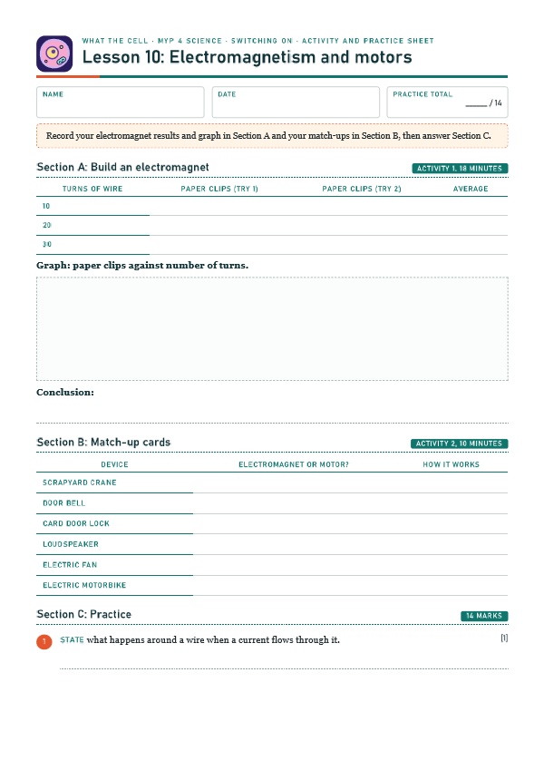

By the end of the lesson you can
- Describe the magnetic field around a magnet and a wire
- Make an electromagnet and test its strength
- State three ways to make an electromagnet stronger
- Explain how the motor effect makes a motor spin
Keys: arrows or a presentation clicker move the slides, F for full screen. Slides with a red dot have a video or simulation.
Videos (all 5 minutes or less)
- 2:21
Current and magnetic fields
FuseSchool. While you watch: What shape is the field around a straight wire? Slide 14.
- 2:47
Electric motors
FuseSchool. While you watch: What two things does a motor need to spin? Slide 17.
Simulations
- Lab
- PhET
Magnets and Electromagnets
PhET, University of Colorado Boulder. Try the tasks on the simulation slide.
Print and practise

Activity and practice sheet
Used in the lesson’s activities, with practice questions. Your teacher has the answers.
Download (PDF)Lesson 10 slides
All 23 slides in one file, to read again or print. The video buttons on the slides open YouTube.
Download the slides (PDF)Revising? The Revision tab on the unit page has the unit notes and review.
Class activity pack
Everything to print for the lesson’s activities: picture cards, sorting mats, station cards with their kit lists, and the teacher’s set-up notes. Print it before class.
Download the activity pack (PDF)Notes: Electromagnetism and motors
magnetic field
The area around a magnet where it pushes or pulls on magnetic materials. For example: iron filings show the field.
electromagnet
A coil of wire that becomes a magnet when a current flows; it can be switched off. For example: a scrapyard crane.
coil
Wire wound round and round, often on an iron core. For example: the copper wire in a motor.
iron core
A piece of soft iron inside a coil that makes the magnet much stronger. For example: an iron nail.
motor effect
A wire carrying a current in a magnetic field feels a force. For example: what makes a motor spin.
electric motor
Changes electrical energy into kinetic energy. For example: in fans and electric cars.
electromagnet
A coil of wire, usually around an iron core, that is magnetic only while a current flows. For example: switch off and the crane drops the scrap.
Key words
| magnetic field | where a magnet pushes or pulls |
|---|---|
| electromagnet | a coil that is a magnet only when a current flows |
| coil | wire wound in loops |
| iron core | iron inside a coil to make it stronger |
| motor effect | a current in a magnetic field feels a force |
| electric motor | electrical -> kinetic energy |
| commutator | reverses the current every half turn in a motor |